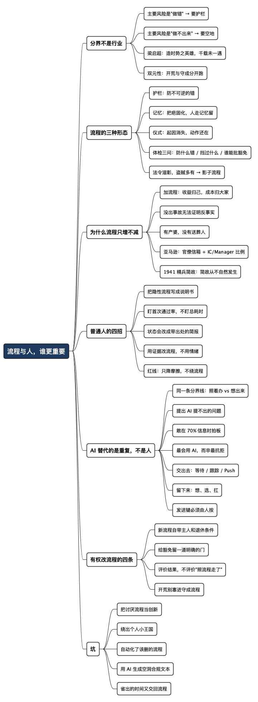

流程与人，到底谁更重要？先分清护栏、记忆和仪式
Posted on 三 05 8月 2026 in Journal
| Abstract | 流程与人，到底谁更重要？先分清护栏、记忆和仪式 |
|---|---|
| Authors | Walter Fan |
| Category | 职场方法论 / 组织 / AI |
| Version | v1.0 |
| Updated | 2026-08-05 |
| License | CC-BY-NC-ND 4.0 |
流程与人，到底谁更重要？先分清护栏、记忆和仪式
有一种对话，我在会议室里听过很多回。
一边说：“流程就是这么定的，你得按流程走。” 另一边说：“那按这个流程走，这事下季度也做不完，干脆别干了。”
两句话都对。所以谁也说不服谁，会开到最后变成各自记一笔账，散会各干各的。
这两句话背后其实是两句更老的话在打架：“铁打的营盘流水的兵”——组织是恒定的，人是流动的，所以规矩比人重要；和“英雄造时势”——关键时刻总得有个人跳出来把事扛下来，所以人比规矩重要。
我这些年正好把流程密度的几个档位都待了一遍：早年在国企当工程师，兼着干过文字秘书，还在业余教过计算机；后来进了外企，一待就是十几年，中间还赶上过一次收购，亲眼看着一家中型公司被并进一家超大公司，流程一夜之间厚了一倍；再后来去过一家私企的创业团队，流程几乎为零；现在又回到大厂。从“最厚”到“几乎没有”再到“重新变厚”，来回过了几遍。
兜完这一圈，我的结论是：这道题的分界线不是行业，而是这块活的主要风险到底是“做错”还是“做不出来”。 前者要护栏，后者要空地。而绝大多数争吵之所以吵不出结果，是因为双方谈的根本不是同一块活。
- 这篇先给一个能上手的分类：把流程分成护栏、记忆、仪式三种，只有第三种是真敌人。
- 然后解释一件让人泄气但必须承认的事：大企业的流程只会变多不会变少，指望它自己好起来是等一个不会来的东西。
- 然后是给普通人的部分：你改不了流程，但你能改自己和流程之间的那层界面——顺手还能攒下真正能撬动流程的证据。
- 最后回到那个人人都在问的问题：AI 替代的是重复，不是人。 那条分界线跟上面那条其实是同一条——等、盯、催、填可以交出去，想、选、扛只能自己留着。
一、先给“英雄造时势”泼一盆冷水
梁启超写《李鸿章传》时说过一段很不给人留情面的话：
“时势造英雄，英雄亦造时势……是为时势所造之英雄，非造时势之英雄也。时势所造之英雄，寻常英雄也……若夫造时势之英雄，则阅千载而未一遇也。” ——梁启超《李鸿章传》第一章绪论，1901 年
翻成大白话：能造时势的英雄，一千年出不了一个。 剩下那些被我们叫做英雄的，多半是时势推到那个位子上的“寻常英雄”。
这句话对我们的意义很实在：别把千年一遇的概率写进自己的职业规划。 那些“他一个人把这家公司救回来了”的故事之所以好听，恰恰是因为它罕见。你在一个几万人的组织里，靠个人意志把流程扭过来的概率，比你想象的低得多。
但反过来，“铁打的营盘流水的兵”这句话也别听全了。这句话原本是形容军队的——营盘之所以能铁打，前提是它要打的仗几十年没怎么变。 阵地战年年打，动作可以背下来；技术和市场天天变，你的“营盘”就得跟着换形状，而这件事流程本身干不了。
所以两句话都不能照抄。我的判断标准很土，就四个维度：
| 维度 | 偏向“流程说话”（守成） | 偏向“人说话”（开荒） |
|---|---|---|
| 错一次的代价 | 不可逆：钱赔出去了、数据泄了、人受伤了 | 可逆：改回来就是一次提交、一次回滚 |
| 信息在谁手里 | 在规则和历史里，一线看不到全局 | 在一线手里，谁离问题最近谁最清楚 |
| 重复频率 | 每天几十次，同样的动作 | 每次都不太一样，说不清下一步 |
| 主要风险 | 做错 | 做不出来 / 做太慢 |
发布订单支付、处理用户隐私数据、改动线上配置——这些活我举双手支持把流程写死，我自己就是这套护栏的受益者。而一个还没验证过、下周可能就砍掉的想法，你让它先过三轮评审两轮对齐，等排到它的时候，那个想法已经不新鲜了。
最要命的不是“流程多”或者“流程少”，是一刀切：拿开荒的松散去干守成的活，早晚出事故；拿守成的严密去干开荒的活，一年下来寸功未立，还人人都很忙。
组织行为学里管这个叫“双元性”（ambidexterity）——O'Reilly 和 Tushman 提出的概念，说的是一家公司必须同时具备两种能力：把成熟业务做扎实（exploit），和在不确定里探路（explore）。他们的核心建议就一句：这两种活要分开跑，用不同的流程、不同的指标、不同的人。 这话听着抽象，落到你的日常就是：别让给你审批发布的那套流程，也来审批你的一个实验。
二、流程的三种形态：护栏、记忆、仪式
“流程太多”这句抱怨没法执行，因为它没说清是哪种流程。我把它分成三类，这是这篇文章最想留给你的东西：
1. 护栏（Guardrail）：防不可逆的错误
生产环境的双人复核、资金操作的四眼原则、敏感数据的权限审批。它们的存在理由很清楚：这类错误没有 Ctrl+Z。
护栏的特征是你能一句话说出它防的是什么。说不出来的，就不是护栏。
2. 记忆（Memory）：把踩过的坑固化下来
发布 checklist 里那些看着莫名其妙的条目，往往每一条背后都有一次事故。每条流程背后都有一道疤，只不过留疤的那个人可能早就离职了。
这一类是“铁打的营盘”真正的价值所在。人会走，记忆不会。一个新人第一天上手就不会踩前人踩过的坑，靠的不是他聪明，是有人把坑写下来了。
我干过一段文字秘书的活，那几年最深的体会就是这个：组织的记忆全靠文档和规矩活着，一件事没写下来，就等于没发生过。
3. 仪式（Ritual）：起因已经消失，但动作还在
这才是真敌人。
它的特征很好认：没人说得清它防的是什么错，没人是它的主人，也没人有权批准豁免。 你问为什么要填这张表，得到的回答是“一直都这么填”。
我用三个问题给流程做体检，一分钟就能出结果：
- 这条流程防的是什么错？ 说不出具体错误，只能说“规范一下”的，可疑。
- 最近一次它真的挡住过什么吗？ 举不出例子，只能说“万一呢”的，更可疑。
- 谁有权批准豁免？ 这一条最狠。答不出第三个问题的，基本可以判定是仪式。
为什么第三个问题最狠？因为一条有主人的流程，主人会知道什么情况下该放行；一条没有主人的流程，谁都不敢放行，也没人敢删——它就成了永动机。
老子有句话我越年长越觉得准。通行本《道德经》第五十七章里说：
“法令滋彰，盗贼多有。”
规矩越细密，绕规矩的花样就越多。仪式型流程一定会长出一套配套的“影子流程”：找熟人先口头过一下、先把事干完再补审批、把一个改动拆成三个小改动免得触发评审。这些动作没人写在文档里，但组织里人人都会。
影子流程的存在，恰恰是明面流程失效的证据。而它的代价是隐性的：它把一件公开的事变成了一件靠人情和信息差办成的事，新人和老实人吃亏最大。
顺便说一句公平话：吐槽流程之前，最好先诚实回忆一下，有多少次是流程救了你。我自己被 checklist 拦下来过不止一次，那种“幸好走了一遍”的感觉，比任何道理都有说服力。
没有现成数字时，可以先用一个不涉密的日常流程做小复盘：记录它的触发条件、实际步骤、等待点、返工原因，以及“如果少做一步，最坏会发生什么”。只要把一次完整往返画出来，通常就能看出它究竟是护栏、记忆，还是已经失去目的的仪式。
这个复盘不需要证明流程“好”或“坏”。它只需要回答一个问题：这一步是在降低不可逆风险，还是只是在证明大家曾经走过这一步？ 前一种值得保留并优化，后一种才是应该拿证据去讨论的对象。
贝索斯在 2016 年给亚马逊股东的信里有一段，我认为是关于这件事写得最准的一段话：
“Good process serves you so you can serve customers. But if you're not watchful, the process can become the thing. ... The process is not the thing. It's always worth asking, do we own the process or does the process own us?” （好的流程是你的仆人，让你能服务客户。但你要是不留神，流程本身就会变成目的……流程不是目的。永远值得问一句：是我们拥有流程，还是流程拥有我们？）
他还举了个特别扎心的例子：一个资历浅的领导会用“可是我们是按流程走的”来为一个坏结果辩解；一个有经验的领导会拿这个坏结果去改流程。
这两种反应的差别，就是护栏和仪式的差别。
三、为什么大企业的流程只会变多不会变少
想明白这一点，你就不会再期待流程自己变好，也就不会天天为它生气了。
原因不复杂，是三条结构性的：
第一，加流程的收益归自己，成本归大家。 出了一次事故，提议“以后加一道审批”的人显得负责、显得有担当，几乎零风险。而这道审批的成本，被摊到之后每一个走这条路的人身上——每人多花十分钟，谁都不至于跳起来反对。这是一笔典型的“我拿收益、大家掏钱”的账，而这种账在任何组织里都会被反复做。
第二，事故会催生流程，但“没有事故”不会消灭流程。 你没法证明反事实：“这半年没出事，是不是因为这条流程？”——没人能回答。于是它就一直留着，因为留着的风险是零，删掉的风险要有人担。
第三，流程有产婆，没有送葬人。 新增流程时总有个提案人，删除流程时没人的 KPI 里写着这一项。
所以流程的净增长是默认状态。要让它减少，必须有人专门去干这件事，而且必须是一个机制，不是一次呼吁。
亚马逊内部流传着贝索斯的一句话：“Good intentions don't work, mechanisms do.”（善意不管用，机制才管用。）这句话我没在他公开的股东信里找到原文，多半是内部讲话流出来的，但它配上亚马逊后来的动作就很有说服力：
- 2024 年 9 月，Andy Jassy 发内部信，要求各个组织在 2025 年第一季度结束前，把一线员工与管理者的比例至少提高 15%——目的就是砍掉管理层级、让决策离一线更近。
- 同一封信里他建了一个 “Bureaucracy Mailbox”（官僚主义信箱），让员工直接举报不必要的流程，明确说他自己会读。
- 到 2025 年 4 月，他在公开场合说：半年多收到 1000 多封邮件，已经改掉了 375 条流程。他特意区分了两个词：process 不等于 bureaucracy，他要砍的是那些“不产生任何真实创造价值”的流程。
这套动作的启发不在于砍了多少条，而在于三件事：它有一个明确的入口，有一个明确的责任人（CEO 本人），并且允许自下而上举报。
这也不是硅谷的新发明。1941 年 11 月，陕甘宁边区第二届参议会上，开明绅士李鼎铭和另外十位参议员联名提出了“精兵简政”的提案——兵要精、政要简、机构要以质胜量。提案一出来就有人反对，说仗打得这么紧还裁人，岂不是自己束手就擒。毛泽东把整份提案抄进自己的本子，还专门为《解放日报》写了社论《一个极其重要的政策》，说这恰恰是治机关主义、官僚主义、形式主义的药。11 月 18 日提案通过。
八十多年前的边区和今天的大厂，隔着一整个时代，但要治的病是同一种。这说明“简政”从来不会自然发生，古今中外都得有人专门发起、专门盯着。
而对我们大多数人来说，残酷的部分正在这里：这个“专门去干的人”通常不是你。 你既没有那个信箱，也没有那个位子。
那怎么办？
四、你改不了流程，但你能改自己和流程之间的那层界面
这是我这两年最有用的一个转念。
你无力删掉一条流程，但你能把自己交给流程的那部分，从“手工”变成“自动”。 你和流程之间那层薄薄的界面——填表、找料、凑格式、追状态、猜标准——它归你管，不需要任何人批准。
而 AI 恰好特别擅长这层界面上的活。这类活的本质是信息搬运：把散落在各处的事实收拢成一份符合某种格式的东西。它不需要判断，不需要担责，只需要耐心和不嫌烦。
（我上一篇比起让 AI 写代码，我更想让它替我干些脏活杂活专门讲了这套分工的框架，这里不重复，只讲跟流程相关的四招。）
招数一：把隐性的流程，先写成一份说明书
一条流程真正折磨人的地方，往往不是规则本身，而是规则没被写下来。
“这个申请要走哪几步？”“评审需要准备什么材料？”“这张表第七栏到底填什么？”——答案散落在一份过期的 wiki、两个同事的记忆、和某个群里三个月前的一句话里。你花的时间大部分不是在走流程，是在猜流程。
我的做法是，第一次被某条流程折磨完之后，立刻趁记忆还热，让 AI 陪我把它整理成一份说明书。四块内容：
# 流程：XXX 申请
## 触发条件
什么情况下必须走这条流程？什么情况下不用走？
## 步骤与卡点
1. 第几步 / 在哪个系统 / 需要谁点同意 / 平均等多久
2. ...
（重点标出哪一步是“卡在别人那里”的，这一步的真实耗时不由你决定）
## 每一步的隐性要求
第七栏要填的其实是 XX；附件必须是 PDF；标题格式错了会被直接打回。
（这些都是踩过一次才知道的，写下来最值钱）
## 常见打回原因
- 打回原因 1 → 怎么避免
- 打回原因 2 → 怎么避免
这份东西的价值有两层。近的一层是下次省事；远的一层是你手上第一次有了这条流程的完整图纸——后面那三招全建在这张图纸上。
顺便说个副产品：这份说明书往群里一发，往往是最受欢迎的东西。你没改掉流程，但你把它的摩擦系数降低了，对身边所有人都降低了。
招数二：盯住“首次通过率”，别盯总耗时
这是我认为最容易被忽略的一个指标。
流程的成本不在于它有几步，而在于被打回几次。因为打回一次不是多花五分钟，是重新排一次队——你补好材料再提交，前面又有别人，审批的人又换了心情。一次打回常常意味着多等两三天。
所以真正的杠杆是一次通过。做法就一件事：把那份说明书里的“常见打回原因”倒过来，变成一张提交前的自检表，让 AI 在你点提交之前先跑一遍。
## 提交前自检（把打回原因倒过来写）
- [ ] 标题格式是否符合 XX 规范
- [ ] 附件是否 PDF、是否带签字页
- [ ] 影响范围是否写了具体的服务名，而不是“相关服务”
- [ ] 回滚方案是否写了具体命令，而不是“可回滚”
- [ ] 上一次这类申请被打回的那个原因，这次避开了没有
这个动作土得掉渣，但收益是实的。它把一件“提交完祈祷”的事，变成了一件“提交前就大概知道结果”的事。
招数三：状态型会议改成带出处的简报
会议是流程摩擦最贵的一种形态，因为它同时占掉一群人最完整的时间块。
先看两个数字，都不是我编的：
- Asana 2024 年的《State of Work Innovation》调研了六个国家一万三千多名知识工作者，人均每周浪费在无效会议上的时间是 5 小时，是 2019 年的两倍。
- Atlassian 调研了五千名知识工作者，62% 的人说自己参加的会议，邀请里根本没写清目标。
这两个数字放在一起，指向同一个病根：大部分状态同步会之所以低效，不是因为信息不够，而是因为没人信那份报告，所以只好把人叫到一起，当面确认一遍。
那解法就顺理成章了：让报告变得可信。 具体到操作只有一条规矩——每条结论带出处链接，推断出来的数字标明是推断，拿不准的标“待确认”，不要替我猜。
一份每条都能点回去核对的自动简报，能让一个每周半小时的状态会变成一段五分钟的异步阅读。我在开会的艺术之一里写过这套做法的细节，这里就不重复了。
反过来说也成立：一份漂亮但没有出处的自动生成报告，只会加深别人对你的怀疑——而且这种怀疑通常还挺对的。
招数四：用证据去改流程，别用情绪
前面三招都是“忍”，这一招才是“改”。
普通人改不了流程，很少是因为没胆量，多半是因为举不出证据。你走进领导办公室说“这个流程太烦了，浪费大家时间”，他能给你的只有一句“我知道，但暂时没办法”。因为你说的是感受，而流程是靠成本说话的。
而 AI 让记账这件事的成本几乎降到零。你只要在走每一次流程时顺手记四个字段：
| 日期 | 事项 | 卡在哪一环 | 等了多久 | 被打回几次 / 打回原因 |
攒三个月，你手上就有了一份完全不一样的东西：
| 你说的话 | 对方能怎么回你 |
|---|---|
| “这个流程太烦了” | “我知道，先忍一忍” |
| “我们组这个季度走了 23 次这个流程，平均 6.4 天，其中 4.1 天卡在第三步的同一个人身上，打回 9 次里有 7 次是同一个原因——第七栏的填法文档里没写” | 这就没法用“先忍一忍”回复了 |
差别不在你的态度，在颗粒度。第二句话里藏着三个可以马上落地的动作：给第三步加一个备份审批人、把第七栏的填法写进模板、或者干脆把这条流程的适用范围缩小。每一个都是具体的、有人能拍板的、不用推翻整套体系的小改动。
亚马逊那个官僚主义信箱能改掉 375 条流程，靠的不是员工们更有勇气了，而是有人具体指出了哪一条、哪一步、卡在哪里。
用数据谈流程时，可以把情绪换成一张很小的对照表：流程名称、样本次数、总耗时、最长等待点、打回原因、最终结果。即使最后没有改成，也能留下可复用的事实；如果推动成功，最好同时写下改前和改后的边界，避免“简化流程”变成“取消护栏”。
一个稳妥的提案通常不是“把这条流程删掉”，而是：“保留不可逆风险的检查，把重复填报、重复审批和没有新增信息的环节合并。” 这样既给改进留下空间，也不会让支持流程的人感觉自己的职责被全盘否定。
一条必须写重的红线：AI 只能降摩擦，不能绕流程
上面四招全部是降低摩擦，一条都不是绕过流程。这个区别是我要说得最重的一句话：
让 AI 帮你把审批材料准备得更快、更全、一次通过，是降摩擦。 让自动化去代替人点“同意”、去伪造一份复核记录、去把一个大改动拆碎躲开评审，是绕流程。
后者的问题不是技术层面，是责任不可转移。哪天真出了事，你没法说“那是脚本干的”。安全、合规、隐私、资金、审批签字——这几类流程的存在意义恰恰是必须有一个人把名字押在上面，把这个环节自动化掉，等于把护栏拆了却留着栏杆的影子，比没有护栏更危险。
我给自己定的判断标准是一句话：如果这个自动化明天被审计问起来，我能不能坦然地把它完整讲一遍？ 讲不出口的，就别做。
五、“AI 会替代人”这话只说对了一半
顺着上面四招往下想，会撞到一个更大的话题。
“AI 会替代人的工作”这句话现在人人都在说，我认为它只说对了一半。准确的说法是：AI 替代的是重复，不是人。
而有意思的地方在于——这条分界线，跟第一节那条分界线是同一条。
第一节说，一块活该由流程说话还是该由人说话，看它的主要风险是“做错”还是“做不出来”。这里也一样：一件事会不会被 AI 接走，看它的主要难点是“照着办”还是“想出来”。
| 会被 AI 接走 | 很难被 AI 接走 | |
|---|---|---|
| 活的性质 | 有标准答案，照着办 | 没有标准答案，得先想出来 |
| 难点在哪 | 耐心、不出错、不嫌烦 | 判断、品味、敢押注 |
| 典型动作 | 搬信息、凑格式、比对状态、催进度 | 定方向、取舍、说服人、担责任 |
| 对应到流程 | 走流程的摩擦 | 该不该走这条流程 |
所以那些真正难被替代的人，有三个共同点，而且都跟“聪明”关系不大：
- 他们能提出 AI 提不出来的问题。 AI 极擅长回答问题，但它不会主动来问你“这条流程为什么存在”“这个需求是不是压根不该做”。问题是人提的，答案可以交给机器。 这就是为什么第二节那三个体检问题比任何自动化都值钱。
- 他们敢在信息不全的时候拍板。 贝索斯在同一封 2016 年的股东信里说，大多数决定应该在你掌握了大约 70% 信息的时候就做出来，等到 90% 你基本已经太慢了。这件事 AI 帮不了你，因为剩下那 30% 的空白只能用判断和承担来填。
- 他们最会用 AI，而不是最抗拒 AI。 这一点最反直觉。你可能以为最有创造力的人对工具最不屑，实际正相反：他们最舍不得把时间花在等待和搬运上，所以最早把这些活扔出去。
那到底能扔出去哪些？我自己扔出去最多、最没有心理负担的，恰恰是流程里最耗神的那三样，它们的共同点是都在“等”：
- 等待：这份申请走到第几步了？还差谁？平均还要多久？——这类活是纯粹的查询，人去查一次要打开三个系统，机器去查是几秒钟，而且它可以每天替你查一遍。
- 跟踪：谁答应了什么时候交、现在到哪一步、有没有卡住。这活枯燥到人干不下去，还容易得罪人——催到第三遍的时候语气很难保持友善。但机器不烦，也不怕尴尬，它只负责把“当初说好的”和“现在实际的”摆在一起给你看。
- Push：该催谁了、该在什么时候催、催的时候要带上哪些材料——这些机器都能替你算好，把草稿都写好。
但这里有个我坚持的边界：机器可以提醒我该催了、可以把话都起草好，按下发送键的必须是我。 催人、拒绝、评价别人、对外承诺——这四件事带着人际温度，同一句话用什么语气、在群里还是私聊、要不要先问一句“是不是卡住了需要帮忙”，差别很大。这不是技术问题，是责任不能转移：哪天一条自动发出的消息伤了同事，你没法说“那是 AI 发的”。
所以我理解的“不被替代”，跟“比 AI 聪明”没关系，跟你把时间花在哪儿有关系：
把“等、盯、催、填”交出去，把“想、选、扛”留下来。 反过来做的人，才是真正危险的——不是因为 AI 太强，是因为他把自己活成了一条流程。
说句可能不太受欢迎的话：在一个流程繁重的组织里，最容易被替代的往往不是初级员工，而是那些工作内容主要由“转达、汇总、催办、审阅格式”构成的中间环节。 这也解释了为什么亚马逊要动的是管理层级的比例，而不是一线人数。
六、如果你手里有权改流程
万一你正好是那个能拍板的人（tech lead、经理、或者只是某条流程的主人），有四条我认为最有性价比：
-
每条新流程，出生时必须带三样东西：它防的是什么具体错误、谁是它的主人、什么条件下它可以退休。第三样最容易被省略，也最致命——没有退休条件的流程，就是在给未来的人挖坑。哪怕只写一句“下个季度复盘时重新评估”，也比不写好。
-
给豁免留一个明确的门。 谁有权批准“这次特殊情况不走这条流程”，必须写清楚。一条没有豁免门的流程，一定会长出影子流程——人们不是不需要例外，只是被迫偷偷办。
-
把评价标准从“有没有按流程走”改成“结果对不对 + 流程有没有帮上忙”。 这就是贝索斯那句“流程不是目的”的落地方式：下次有人用“我们是按流程走的”来解释一个坏结果，把它当成一次改流程的机会，而不是一次免责的理由。
-
开荒的队伍别塞进守成的流程。 这就是双元性理论最实用的那一句。一个探索性的小队和一条成熟的产线，用同一套评审、同一套指标、同一套节奏，结果是两边都做不好。
七、几个坑，我自己或者身边人都踩过
坑一：把“讨厌流程”当成“我很创新”
这是最常见的自我美化。真话是：讨厌流程的人里，绝大多数只是讨厌麻烦。
区分办法很简单——你能不能说清这条流程防的是什么错？ 能说清、并且论证出这个风险在你这个场景下不成立的，是判断；只会说“太繁琐了”的，是嫌麻烦。这两者在会上听起来很像，但一问就露。
坑二：绕流程绕出了自己的小王国
有一类人确实很能干，什么流程都能绕过去，事情办得又快又好。代价是：这些事怎么办成的，只有他知道。 他一走，全崩。
这正是“铁打的营盘”那句话真正想说的东西。英雄式地绕流程，绕的是组织的记忆。 你确实提速了，但你把自己变成了一个单点故障——顺便还堵住了自己的晋升，因为没人敢让你去做别的事。
我的折中办法是：绕的时候顺手写下来。 你走了一条捷径，就把这条捷径记成文档。这样它就从“个人特权”变成了“可复用的路径”，而这恰恰是有可能被正式采纳的东西。
坑三：自动化了一条本该被删掉的流程
这是最容易犯、也最可惜的一个坑，因为它看起来特别像“效率提升”。
顺序永远是：先问该不该做，再问怎么做得快。 你把一件不该做的事自动化了，唯一的效果是让它更难被发现和删掉——因为现在成本低了，没人再有动力去问它为什么存在。
我的对策：动手自动化之前，先用第二节那三个体检问题过一遍。如果它是仪式，先花十五分钟试着让它消失，实在推不动，再考虑自动化。顺序反了，你就成了这条仪式的续命人。
坑四：用 AI 生成的“合规文本”去糊弄流程
一份格式完美、内容空洞的设计文档；一份把风险写成“无重大风险”的评估表；一份自动生成、没人看过的复核记录。
流程的对面坐着的是人。你糊弄一次没人发现，糊弄三次，你在这条流程上的信用就没了——从此你的每一份材料都会被格外仔细地看，你的实际成本反而上升。
这也是那条红线的延伸：AI 应该让你的材料更容易被通过，而不是更容易被通过而内容更空。 这两件事只差一个字，但差别是全部。
坑五：省下来的时间，又交回给了流程
这个坑我上一篇文章里就提过，这里必须再提一次：你把走流程的时间从三小时压到半小时，省出的两个半小时会被新的会议和新的对齐精准填满，因为你现在“看起来很有空”。
我的土办法：省出来的时间先在日历上占掉，写明用途——“设计与编码”“想清楚 XX 问题”。占掉的时间才是你的，没占的时间是所有人的。
八、行动清单：这周就能起步
本周
- [ ] 挑一条最让你烦的流程，用三个体检问题过一遍：它防什么错？最近一次挡住过什么？谁能批豁免？
- [ ] 判断它属于护栏、记忆、还是仪式。是护栏就别再骂它了；是仪式，进入下面的流程。
- [ ] 把这条流程写成一份说明书（触发条件 / 步骤与卡点 / 隐性要求 / 常见打回原因），扔到群里。
本月
- [ ] 把“常见打回原因”倒过来，做一张提交前自检表，用 AI 在提交前跑一遍。
- [ ] 开始记流程账，四个字段就够：日期 / 事项 / 卡在哪一环 / 等了多久 / 打回几次和原因。
- [ ] 挑一个纯状态同步的例行会议，改成一份每条带出处链接的异步简报，先试两周。
- [ ] 把“等待 / 跟踪 / Push”这三样里最耗神的一样交给 AI 每天跑一遍——但发送键留给自己。
- [ ] 检查你现有的自动化里，有没有哪一条其实是在“替人点同意”。有的话，今天就拆掉。
本季度
- [ ] 拿三个月的流程账，找出耗时最长的那一个卡点，带着具体数字去谈一个小改动——不要试图推翻整套流程。
- [ ] 如果你有权改流程：给你负责的每一条流程补上主人和退休条件。
- [ ] 如果你绕过某条流程办成了事：把这条捷径写成文档，让它有机会变成正式路径。
- [ ] 把省出来的时间在日历上占掉，写明用途。
长期，每季度问自己一个问题
- [ ] 这一季度，我用在“把事情想透”上的时间，比上一季度多了还是少了？
其余全是过程指标，这一个才是结果指标。
最后一句
回到开头那两句老话。
我现在觉得它们其实不矛盾，只是各管一段：营盘负责让组织不忘事，人负责让组织不僵住。 一家健康的公司，两样都要有——而且要有本事知道哪块地该铁打，哪块地该留空。
难的是我们大多数人的处境：你既不是那个能改营盘的人，也不是那个千年一遇造时势的英雄。 那还有第三种活法吗？
有。在营盘里给自己搭一个作坊。
你改不了大门口的规矩，但你能把自己那间屋子收拾利索：把重复的活自动化掉，把流程的图纸画出来，把该记的账记上。这三件事不需要任何人批准。做久了会有个意外的结果——当你手上有了图纸和账本，你反而成了那个最有可能改掉一条流程的人。 因为改流程从来不需要英雄，只需要一个说得出“具体是哪一步、卡了多久、打回过几次”的人。
王阳明讲“事上练”，说学问不在书斋里，在具体的事情上磨。流程这东西也一样，抱怨它一百遍不会让它变短一分钟，把它拆开、量一遍、改一小步，才算真的碰到它。
至于 AI 在这里的角色，我越来越觉得它不像个替代者，倒像个不嫌烦的学徒：它不会替你想出那个主意，但它可以替你在门外排队、盯着单子、到点提醒你该催谁了。它接走的是等待，还给你的是时间。剩下的事——想出什么、选哪一条、出事了谁扛——还得你自己来。
你手上最烦的那条流程，你能说出它到底防的是什么错吗？如果说不出来，恭喜——你大概找到了本季度最值得动手的那件事。
全文思维导图
@startmindmap
<style>
mindmapDiagram {
node {
BackgroundColor #F8F9FA
RoundCorner 10
Padding 10
FontSize 13
}
:depth(0) {
BackgroundColor #1E3A5F
FontColor white
FontSize 18
FontStyle bold
}
:depth(1) {
FontSize 15
FontStyle bold
}
:depth(2) {
FontSize 13
}
}
</style>
* 流程与人，谁更重要
** 分界不是行业
*** 主要风险是"做错" → 要护栏
*** 主要风险是"做不出来" → 要空地
*** 梁启超：造时势之英雄，千载未一遇
*** 双元性：开荒与守成分开跑
** 流程的三种形态
*** 护栏：防不可逆的错
*** 记忆：把疤固化，人走记忆留
*** 仪式：起因消失，动作还在
*** 体检三问：防什么错 / 挡过什么 / 谁能批豁免
*** 法令滋彰，盗贼多有 → 影子流程
** 为什么流程只增不减
*** 加流程：收益归己，成本归大家
*** 没出事故无法证明反事实
*** 有产婆，没有送葬人
*** 亚马逊：官僚信箱 + IC/Manager 比例
*** 1941 精兵简政：简政从不自然发生
** 普通人的四招
*** 把隐性流程写成说明书
*** 盯首次通过率，不盯总耗时
*** 状态会改成带出处的简报
*** 用证据改流程，不用情绪
*** 红线：只降摩擦，不绕流程
** AI 替代的是重复，不是人
*** 同一条分界线：照着办 vs 想出来
*** 提出 AI 提不出的问题
*** 敢在 70% 信息时拍板
*** 最会用 AI，而非最抗拒
*** 交出去：等待 / 跟踪 / Push
*** 留下来：想、选、扛
*** 发送键必须由人按
** 有权改流程的四条
*** 新流程自带主人和退休条件
*** 给豁免留一道明确的门
*** 评价结果，不评价"照流程走了"
*** 开荒别塞进守成流程
** 坑
*** 把讨厌流程当创新
*** 绕出个人小王国
*** 自动化了该删的流程
*** 用 AI 生成空洞合规文本
*** 省出的时间又交回流程
@endmindmap

扩展阅读
- Jeff Bezos' 2016 Letter to Amazon Shareholders —— “process as proxy”和“do we own the process or does the process own us”的原文
- Message from CEO Andy Jassy: Strengthening our culture and teams —— 2024 年 9 月内部信，15% 比例与 Bureaucracy Mailbox 的出处
- Andy Jassy's Advice for Companies That Want to Cut Bureaucracy —— 1000 多封邮件、375 条流程改动的数字来源
- Organizational Ambidexterity: Past, Present and Future —— O'Reilly & Tushman 关于“双元性”的综述
- Reduce Meetings: Think Before You Sync —— Atlassian 五千人调研，72% 会议无效、62% 不知道会议目标
- 李鸿章传 —— 梁启超，“时势所造之英雄”出自第一章绪论
- “精兵简政”的提出与实施 —— 1941 年李鼎铭提案的来龙去脉
- 比起让 AI 写代码，我更想让它替我干些脏活杂活 —— Walter Fan，本文第四节那套分工的完整版
- 开会的艺术之一：在开会时实时分享 Agenda 和会议记录 —— Walter Fan
本作品采用知识共享署名-非商业性使用-禁止演绎 4.0 国际许可协议进行许可。 欢迎在我的个人网站 https://www.fanyamin.com 访问原文并评论。